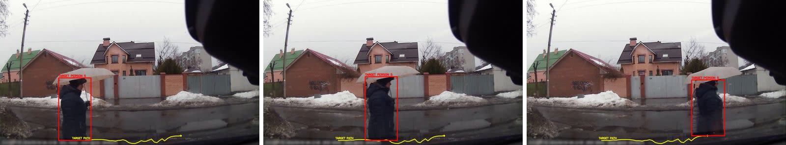
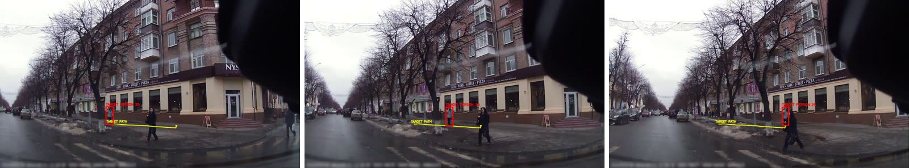
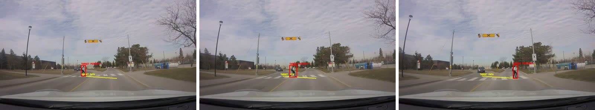
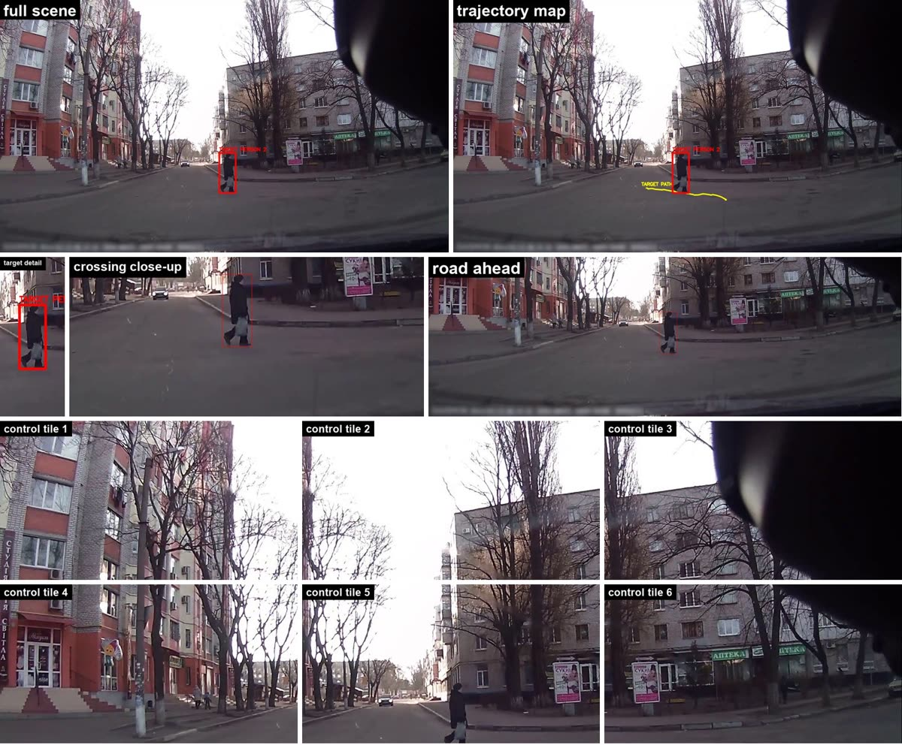

Code
Pipeline
Tracking, the crossing decision, both VLM checks, the law stage, the JAAD audit and the country analysis.
Pedestrians in dashcam footage who walk across the road with no zebra crossing and no traffic light, found automatically and then judged against the law of the country they are in. A claim has to pass every stage; any doubt means no claim.
of judged crossings had no zebra crossing and no light
the lowest share of the nine countries
Japan has the most crossings of all, 38.6 an hour of footage, and almost every one is at a zebra crossing or a light. In Bangladesh nine people in ten cross where there is none: 9.5 such crossings an hour, seventy times Japan's rate.
Moments from the analysed footage where a person walks across the camera car's road with no zebra crossing and no light. In Bangladesh even a footbridge in sight makes it an offence. Each clip opens its video on YouTube at that moment.
Every dot is a place in CROWD, sized by its hours of footage and coloured by what its country's law says about crossing away from a crossing. Rule sets cover 52 countries and 87.8% of CROWD's footage. The third view shows how often people crossed without a marking in the nine sampled countries.
About 100 hours of daytime car footage per country, run through the crossing detector and both VLM checks. Bangladesh stands apart; India and Vietnam follow; in the other six, almost every crossing happens at a zebra crossing or a light.
All nine countries together: the people the detector proposed, and what the two VLM checks made of them.
Per hour of footage, with a 95% interval from a bootstrap over segments.
Of the crossings the VLM judged, with a 95% Wilson interval.
Every person the detector proposed, by the verdict of the two VLM checks.
How many people the detector proposed, with or without a marking.
Crossings without a marking per hour, from the same footage.
Measured from each person's track in the image, compared within a country where there are at least 20 crossings without a marking. Bars are 95% intervals. The clearest difference: people who cross without a marking cross alone far more often.
Share of people whose crossing overlapped another person's within a second.
Mean number of cars, buses, trucks and motorcycles from a second before to a second after.
Body heights per second across the image; no common direction between countries.
Share of people who stood still for half a second or more after setting off.
Real pipeline output on the JAAD benchmark. The red box is the tracked person; the yellow line is the path of their feet.




CROWD holds far more footage than anyone can check by hand, so the method is built for claims that can be trusted without a human verifier: each stage answers one question, and a claim needs every stage to agree.
Measured against JAAD, whose pedestrians carry crossing labels and whose frames mark zebra crossings and traffic lights. Anything JAAD cannot settle counts as wrong, so the precision is a lower bound: 95% sure it is at least 87.8%.
JAAD pedestrians who crossed with no zebra crossing and no light, on all 309 videos.
Every claim was correct; most misses happen in the detector.
| Split | Videos | Claims | Correct | Found |
|---|---|---|---|---|
| Train | 165 | 13 | 13 | 13 of 65 |
| Test | 117 | 8 | 8 | 7 of 39 |
| Val | 27 | 2 | 2 | 2 of 7 |
| All | 309 | 23 | 23 | 22 of 111 |
The crossing check against 110 people reviewed by hand, 63 of whom crossed.
| Setting | Agrees | Crossings found | False accepts |
|---|---|---|---|
| 4-bit, crossing window | 68 | 21 (33%) | 0 of 47 |
| 16-bit, crossing window | 81 | 42 (67%) | 8 of 47 |
| 16-bit, whole track | 76 | 41 (65%) | 12 of 47 |
Taken from the Global Jaywalking Laws document and split into conditions a model can answer from the footage. Bangladesh, which the document does not cover, was written by hand from the Road Transport Act 2018.
Countries by what their law says.
Countries by how strictly the rule is enforced.
The law as written, and the numbered questions the VLM answers for a claim there. The rule set, not the model, turns the answers into a label.
Conditions: the numbered questions the VLM answers for a claim in that country.
The method is tuned to be right when it claims, not to find everyone, so every count on this page is a lower bound.
Open source under the MIT License.
Tracking, the crossing decision, both VLM checks, the law stage, the JAAD audit and the country analysis.
Crossings per country, rates with intervals, the 4-bit run and the movement of people crossing.
Every country's conditions, decision rule, legal basis, enforcement and penalties.